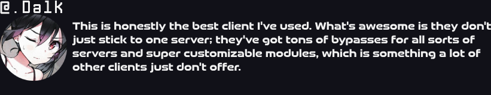

Narii
Excellence delivered. Expectations exceeded.
Forums
Download
Unbreakable
Security
Premium
Performance
Used by
+
Members
Trusted
since 2019. Battle-tested excellence.

Narii Media
Latest Videos & Content

 Unbreakable Security
Unbreakable Security Premium Performance
Premium Performance Used by + Members
Used by + Members Trusted since 2019. Battle-tested excellence.
Trusted since 2019. Battle-tested excellence.